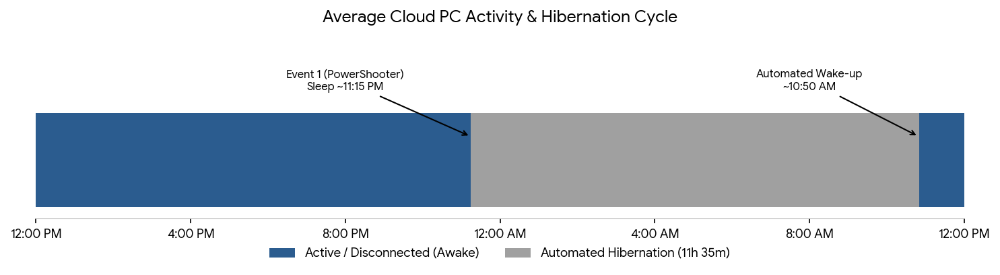
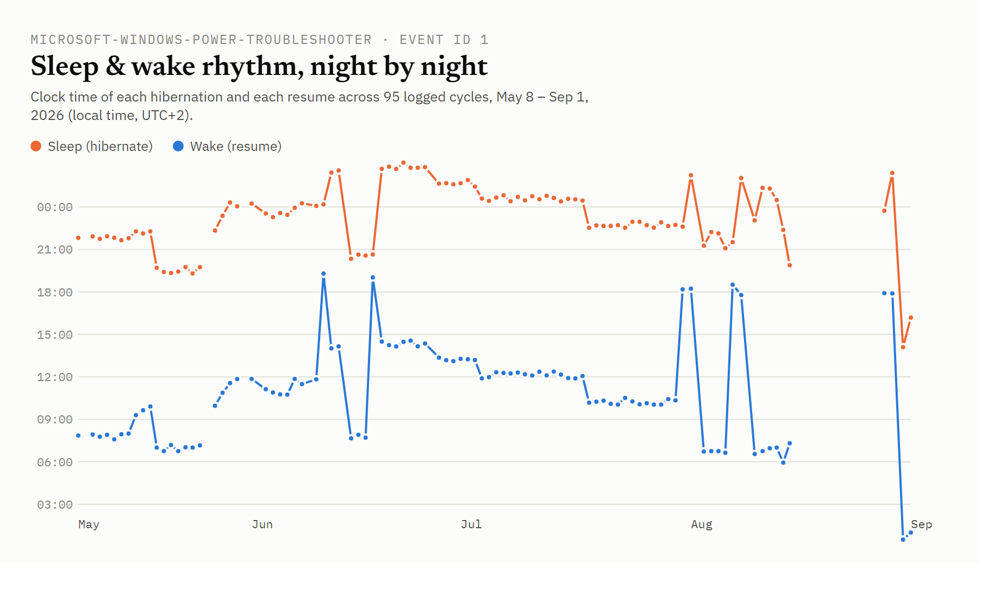
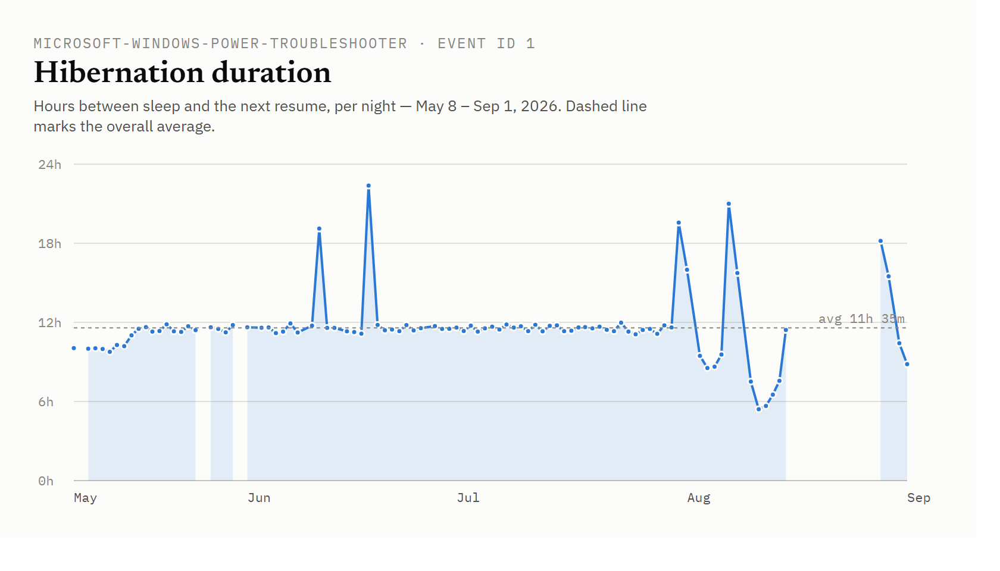

Understanding Windows 365 Cloud PC Hibernation Behavior
When I log in to my Windows 365 Cloud PCs, I work, and sometimes I start a task and let it run while I disconnect (e.g., over the weekend). If I reconnect on Monday, I can see the result. That works well, but sometimes I reconnect and my Cloud PC wakes up first - so it was hibernated, and my tasks didn't run to completion, even while my session was disconnected.
Note: I'm unsure if that is a general behaviour or based on my license, region, usage, etc. I also heard that other users are not seeing this.

Tracking the Hibernation Schedule
This behaviour is driven by background power management. By reviewing the Windows System Event Log and filtering for Event 1 (Source: System - PowerShooter), you can exactly figure out when a specific Cloud PC enters and exits this state.
These intervals are different from CPC to CPC and may be based on typical usage. For my specific Cloud PC, the event logs revealed a consistent daily routine:
- Enters Hibernation: ~11:15 PM
- Automated Wake-up: ~10:50 AM
This results in an automated hibernation window of roughly 11.5 hours whenever the user session remains completely disconnected. PS: I never saw my CPC go to sleep while I'm connected ;-)
The Role of the AzureHibernateExtension
I did some research on hibernation and found that Cloud PC's hibernation works similarly to Azure Virtual Desktop: the AzureHibernateExtension handles it.
From an architectural and resource perspective, this automated pausing is highly logical. It ensures that compute resources in a managed cloud environment are not consumed needlessly when idle, reducing overall infrastructure strain and optimizing backend efficiency.
Please note, that this is also expected: Service Responsibility
Testing the Boundaries
So, I tried a trick and uninstalled the extension to test it. That worked, but only for a few days. The extension was installed again. I also successfully tried another hack to prevent my CPC from hibernating. But I wouldn't recommend this, while pausing resources in a managed cloud environment makes sense.
Analytics
I exported my the filtered System event log and did some summarization using Excel and an AI tool. Here are my results:
Cloud PC Sleep Rhythm
Microsoft-Windows-Power-Troubleshooter · Event ID 1
Parsed from 95 hibernate/resume cycles between May 8, 2026 and Sep 1, 2026, read from the Power-Troubleshooter event log of this Windows 365 Cloud PC. All clock times below are local (Europe/Berlin, UTC+2), converted from the log's UTC Sleep Time / Wake Time fields.
Summary
| Metric | Value |
|---|---|
| Nights logged | 95 cycles (May 8 – Sep 1, 2026) |
| Average sleep time | 23:15 local — hibernation triggered |
| Average wake time | 10:50 local — resumed from low power |
| Average duration | 11h 35m asleep |
| Median duration | 11h 27m |
| Duration range | 5h 25m – 22h 23m |
Sleep & wake rhythm, night by night
Clock time of each hibernation and each resume, plotted across the full date range. A steady line means a steady rhythm; jumps mark the nights that broke it - most visibly two multi-day gaps in mid/late June and a scattering of very late "sleeps" (past midnight) in early August. The missing data end of August are the result of my test to avoid the hibernation.

Hibernation duration
Hours between sleep and the next resume, per night. The tall spikes (up to 22h 23m) are nights and weekends the Cloud PC sat hibernated most of the day before being resumed; the short dips down to ~5–6h in early August are same-day back-to-back sessions.

By day of week
Average sleep time, wake time and hibernation duration, grouped by the weekday the sleep cycle started on (local time). Let me mentioned, that I'm not using my CPC on a daily-base. So, I'm not starting my work late 😉.
| Day | Avg. sleep time | Avg. wake time | Avg. duration | Nights |
|---|---|---|---|---|
| Monday | 22:16 | 09:07 | 10h 50m | 13 |
| Tuesday | 22:50 | 09:43 | 10h 53m | 13 |
| Wednesday | 23:13 | 09:57 | 10h 45m | 13 |
| Thursday | 23:17 | 10:59 | 11h 42m | 14 |
| Friday | 23:19 | 12:08 | 12h 50m | 15 |
| Saturday | 23:30 | 10:54 | 11h 23m | 12 |
| Sunday | 00:14 | 12:35 | 12h 21m | 15 |
Sleep time drifts later and wake time drifts later across the week, peaking on Friday/weekend nights — the Cloud PC is put to sleep latest and resumed latest heading into the weekend, and hibernation runs longest (12h 21m–12h 50m) on Friday and Sunday nights.
Analytics Notes
- Source file:
CPC-Hibernate.csv(Windows Event Viewer export, Power-Troubleshooter event ID 1) - exported from my CPC eventlog. - "Sleep" is the low-power transition recorded as
Sleep Time; "Wake" is the matchingWake Timein the same event record. - Timestamps were converted from UTC to Europe/Berlin summer time (UTC+2), which covers this entire date range (no DST transition falls within it).
- Sleep times after midnight (e.g. 00:24, 01:08) are counted as belonging to the previous evening's rhythm, so the averages reflect the actual bedtime pattern rather than being skewed by the day boundary.
AI Disclosure: This article was drafted with the assistance of Artificial Intelligence tools for linguistic refinement, structure, and text clarity in accordance with EU AI Act disclosure guidelines. All technical concepts, architectural evaluations, factual insights, and core content were independently curated and authored by the human author.